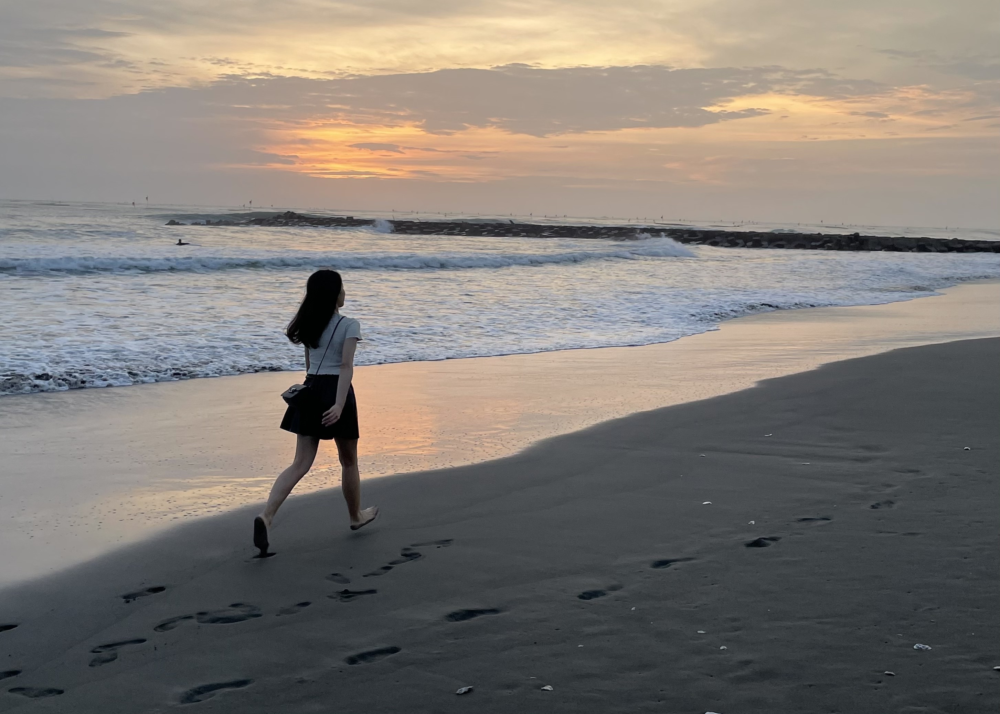

TZU-JIE CHAO
關於我

我是趙子潔，
畢業於淡江資訊傳播學系，
因緣際會下接觸網頁前端，
展開一場學習程式的旅程，
很喜歡打完程式看到成果的成就感，
雖然途中常常遭遇挫折，但也越挫越勇，
藉由解決困難與學習新知來充實自己。
技能
- 熟悉HTML5與CSS3語言
- 響應式RWD應用
- 熟悉JavaScript與ES6知識
- 熟悉Vue.js與VueX / Vue-Router應用
- 運用Ajax串接後端API
- 後端語言PHP基礎與MySQL簡單應用
- 熟悉Git指令並依循Git Flow進行版本控管
- 應用Lighthouse檢測網頁與優化SEO
經歷
淡江資訊傳播學系
2016/09 - 2019/06
網路基因技術部實習
2018/07-2019/01
露天拍賣前端工程師
2019/08-2022/10
資訊傳播學系
- 在系上接觸到許多技能，包含拍照技巧、照片編修、電腦繪圖、影音剪輯、行銷知識、數位行銷、程式設計等等，在其中發現自己對程式很有興趣，進而自己多加學習。
創意數位媒體教學實習中心 —— 網站組
- 於大二通過甄選加入系上創意數位媒體教學實習中心的網站組，透過讀書會的方式互相分享與教學更多行銷與網頁程式相關的知識，並回家自主學習，在這裡磨練了許多寫網站的技巧。
畢業製作 —— 《淡事》
- 在大四畢業製作過程中，與組員共同發想專案主題與內容，並設計活動與展覽，在互相分工與團隊合作下，我們在半年的時間完成屬於我們與淡水的作品《淡事》與以淡水古蹟為主題的實境解謎《解靈人》。
實習過程
- 實際到業界學習才發現自己有許多的不足，很慶幸在網基擁有很自由的學習空間以及很願意教的前輩們，讓我技能level up，並且有了實戰的經驗，也了解到網站專案的流程。
練習與實戰經驗
- 練習切版、jQuery應用與學習Vue.js
- 學習後端語言PHP與MySQL，如何從資料庫撈資料
- 實際參與專案，練習使用第三方套件，並藉此了解專案運作流程
買家相關頁面維護與需求開發（首頁、商品頁、賣場頁、搜尋頁 等等）
- 與企劃協調需求、與UI溝通樣式與動態、與後端串接API
- 使用Git進行版本控制（也用過SVN）
- 站上共用元件開發（ex.數量選擇器 / slideshow）
- 專館推薦商品集合頁、運費券領券頁、雙11任務活動頁等頁面開發
- 將運費券活動標籤改成後台上稿，節省配合活動不斷換圖的人力與時間
- 運費券、賣家折扣碼前台頁面調整，提升購買量
- 第三方登入相關頁面開發，提升註冊人數
頁面重構
- 使用Vue.js重構T3 module、jQuery的舊頁面（VueX / Vue-Router）
- 商品頁模組化並應用VueX重構，提升Lighthouse分數
- 首頁改版 (搭配Scrum敏捷開發)
其他
- GTM&GA埋碼（GA電子商務），以利數據追蹤、觀測轉換率
- 協助搜尋頁SEO優化並觀測Google Search Console數據
- 解決手機版搜尋頁LCP問題，從不良回到優良（2.5秒以內）
作品
 《淡事》專案網站
為畢業製作《淡事》做一個專案網站，展示專案所做的內容、淡水古蹟介紹與活動紀錄，讓觀看者能透過網站更了解此專案的應用，也能藉此做推廣專案。
《淡事》專案網站
為畢業製作《淡事》做一個專案網站，展示專案所做的內容、淡水古蹟介紹與活動紀錄，讓觀看者能透過網站更了解此專案的應用，也能藉此做推廣專案。
參觀網站
《解靈人》實境解謎——解謎網站
《解靈人》是一套融合淡水古蹟的實境解謎遊戲，是《淡事》專案下的產品，玩家能透過此解謎網站登入序號、取隊名、輸入答案、索取提示、查看排行榜。我獨自完成前後端的部分，應用PHP與MySQL做資料管理，並與前端網頁連接，給玩家更便利的遊玩過程。
 中午吃什麼
暑假在網路基因實習時做的一個小專案，也藉由架這個網站學到許多技巧，更磨練了自己的基本功。也在這個專案學了一點php，將店家資料存在資料庫，再利用ajax從資料庫讀取資料來呈現，並且做了一個後台來管理店家資料。
中午吃什麼
暑假在網路基因實習時做的一個小專案，也藉由架這個網站學到許多技巧，更磨練了自己的基本功。也在這個專案學了一點php，將店家資料存在資料庫，再利用ajax從資料庫讀取資料來呈現，並且做了一個後台來管理店家資料。
參觀網站
 國泰－高登計畫 首頁
在網基實習時，接觸到的一個真實專案，雖然並不是整個首頁都是我獨立完成，但能有機會參與案子的一部分，也讓我學到許多，包含與設計的溝通以及測試後的種種debug，都是一段很特別的經驗。
《淡事》專案網站
為畢業製作《淡事》做一個專案網站，展示專案所做的內容、淡水古蹟介紹與活動紀錄，讓觀看者能透過網站更了解此專案的應用，也能藉此做推廣專案。
國泰－高登計畫 首頁
在網基實習時，接觸到的一個真實專案，雖然並不是整個首頁都是我獨立完成，但能有機會參與案子的一部分，也讓我學到許多，包含與設計的溝通以及測試後的種種debug，都是一段很特別的經驗。
《淡事》專案網站
為畢業製作《淡事》做一個專案網站，展示專案所做的內容、淡水古蹟介紹與活動紀錄，讓觀看者能透過網站更了解此專案的應用，也能藉此做推廣專案。
參觀網站
中午吃什麼
暑假在網路基因實習時做的一個小專案，也藉由架這個網站學到許多技巧，更磨練了自己的基本功。也在這個專案學了一點php，將店家資料存在資料庫，再利用ajax從資料庫讀取資料來呈現，並且做了一個後台來管理店家資料。
參觀網站
國泰－高登計畫 首頁
在網基實習時，接觸到的一個真實專案，雖然並不是整個首頁都是我獨立完成，但能有機會參與案子的一部分，也讓我學到許多，包含與設計的溝通以及測試後的種種debug，都是一段很特別的經驗。
聯絡我

趙子潔
lube44011@gmail.com